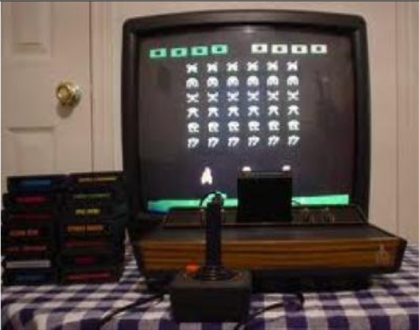

|  |
|
Favourite tracks:
|
|
Favourite topics:
|
Really old TVEarly electronic television sets were large and bulky, with analog circuits made of vacuum tubes. As an example, the RCA CT-100 color TV set used 36 vacuum tubes. Following the invention of the first working transistor at Bell Labs, Sony founder Masaru Ibuka predicted in 1952 that the transition to electronic circuits made of transistors would lead to smaller and more portable television sets. By the late 1960s and early 1970s, color television had come into wide use. In Britain, BBC1, BBC2 and ITV were regularly broadcasting in colour by 1969. Old joystickA joystick, sometimes called a flight stick, is an input device consisting of a stick that pivots on a base and reports its angle or direction to the device it is controlling. A joystick, also known as the control column, is the principal control device in the cockpit of many civilian and military aircraft, either as a centre stick or side-stick. It often has supplementary switches to control various aspects of the aircraft's flight. Joysticks are often used to control video games, and usually have one or more push-buttons whose state can also be read by the computer. A popular variation of the joystick used on modern video game consoles is the analog stick. Joysticks are also used for controlling machines such as cranes, trucks, underwater unmanned vehicles, wheelchairs, surveillance cameras, and zero turning radius lawn mowers. Bunch of disksThe compact disc (CD) is a digital optical disc data storage format that was co-developed by Philips and Sony to store and play digital audio recordings. In August 1982, the first compact disc was manufactured. It was then released in October 1982 in Japan and branded as Digital Audio Compact Disc. The format was later adapted (as CD-ROM) for general-purpose data storage. Several other formats were further derived, including write-once audio and data storage (CD-R), rewritable media (CD-RW), Video CD (VCD), Super Video CD (SVCD), Photo CD, Picture CD, Compact Disc-Interactive (CD-i) and Enhanced Music CD. |